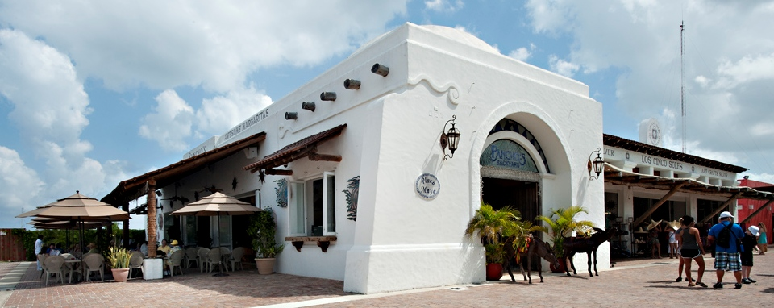
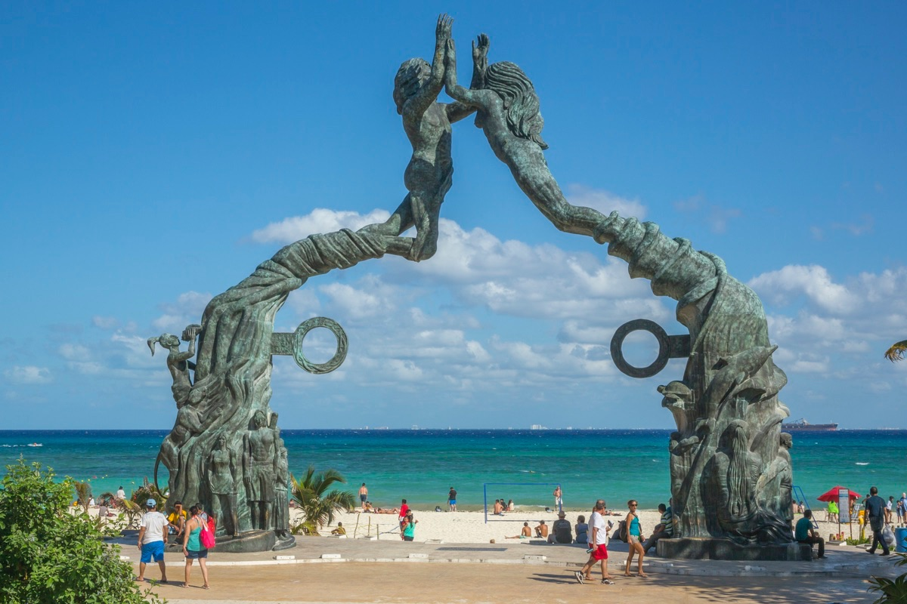
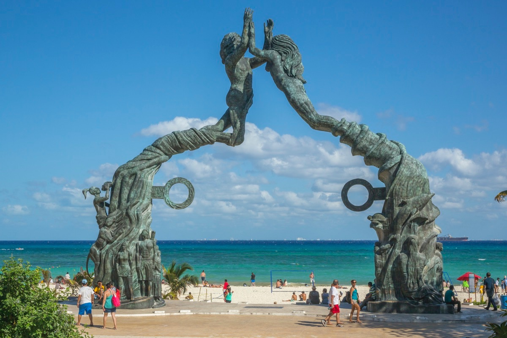

ADVENTURE GALLERY
Puerta Maya


Scoots motor scooter rental company is located on the island of Cozumel off the coast of Mexico in the western Caribbean Sea. This owner-operator company caters to locals, walk-in tourists, enthusiasts, and cruise-based touring groups and partnerships. The company has two physical rental locations on Cozumel.
One is near the Playa del Carmen-Cozumel Ferry dock in el Centro de Cozumel and the other is near the Terminal Puerta Maya further south along the coast which caters to the cruise lines and patrons. The company promotes friendly and easy to rent services of motor scooters, jeeps, and side-by-sides ATVs.
Playa del Carmen

As one of the best beach towns in Mexico, “Playa” (as the locals call it), is also one of the best Mexico travel destinations. Located on the Caribbean Sea, about 45 minutes south of Cancun, Playa has something for everyone — Mayan ruins, swimmable cenotes, beautiful beaches and more.
Playa del Carmen has carved its own Euro-chic niche along the Yucatán Peninsula. Sophisticated expats and vacationing Europeans relax at the beachside lounges, upholding this small enclave's budding reputation as the place in Quintana Roo to see and be seen. The area's nerve center is El Zócalo, and similar to Mediterranean beachfront towns like Nice, the funky little public square is within walking distance of the beach.
Just off the square and running parallel with the shore, La Quinta Avenida features several blocks worth of delicious eateries and quirky shops. And with proximity to the ancient ruins of Tulum and ample natural landscapes to explore (like Río Secreto, Xel-Há and the underwater depths of the Caribbean Sea), Playa del Carmen caters to history buffs and outdoor enthusiasts alike. And of course, Playa's swaths of white sand and brilliantly turquoise water impress even the most selective beach bums. Cancún is Mexico's vacation of the past – today's savvy beachgoers choose the cosmopolitan "Playa."
Paradise
 


Cozumel's clear turquoise waters and powdery sands coax travelers from cold winter climates to this roughly 185-square-mile island off the Yucatán Peninsula. Cruise ships are a constant feature of Cozumel's coastal views, and the atmosphere on this charming island is often interrupted by tourist chatter. In fact, Cozumel's charms are so effective that the shopping plazas along the waterfront stay congested much of the year.
But crowds shouldn't deter you from discovering what this tiny Yucatán island has to offer, especially as Cozumel's real allure is far away from the downtown area. You can hire a fishing or diving charter boat to discover the shallow reefs along the coast (this is arguably one of the best diving destinations in the world), take a glass-bottom boat on a tour around the island or simply find a quiet beach where you can relax and do nothing. Once the cruise ships clear out, you should head down to a local bar for some live music and the real skinny on this little island.